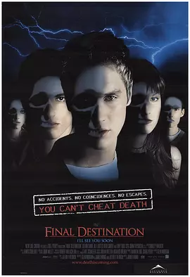

7.9
死神来了
Final Destination
2000
美国
评分 7.9
导演:
黄毅瑜
演员:
戴文·萨瓦 / 艾丽·拉特 / 科尔·史密斯 / 克里斯汀·克洛克 / 丹尼尔·洛巴克
类型:
恐怖,惊悚
剧情简介
艾利克斯在登机口握着护照时，心里突然闪过一阵无法解释的恐惧。空气里混着机舱味的微风、广播的回声、同学们的笑闹声，在他耳中都变得沉闷。他的预感像碎裂般袭来：金属扭曲、座舱火光、机翼破裂……一幅幅画面迅速堆叠，仿佛真实发生。他惊慌失控地冲出座位，大喊飞机即将爆炸，在混乱中，他与几名同伴被赶下飞机。片刻后，夜空被巨大火光撕开，飞机如他所见般粉碎。幸存者起初沉浸在劫后余生的震荡中，然而奇怪的事件随之而来。浴室玻璃蒙上薄雾，倒在地面的水流朝不该去的方向流动，窗帘绳无声摇晃，像是在示意什么。艾利克斯逐渐察觉，每个人的死仿佛遵循某种顺序，与那场爆炸完全相吻合。他试图依据细小线索推断下一个危险，却越接近真相，越感到自己被某种看不见的力量盯上。死亡不以实体出现，却总以一连串看似偶然的连锁反应逼近。厨房的刀具、脱轨的电线、忽然滑落的易拉罐，甚至是一阵风，都可能成为压垮生命的最后一步。每当悲剧发生，现场总留下一种诡异的静默，仿佛死神悄悄走过，完成了它的“秩序修正”。艾利克斯与剩下的幸存者奔走求生，在学校、住宅、街道之间试图打破这条看不见的链条。恐惧像阴影一样紧贴他们，每一次躲过都不代表真正的逃脱。随着死亡序列愈发清晰，他必须在时间耗尽前找到逆转命运的方法。可面对一个无形、无声、无法对抗的对手，他们最终能否从死神布下的轨迹中冲出？影片把这种无可逃避的压迫感推向极致，也开启了整个系列的命运循环主题。